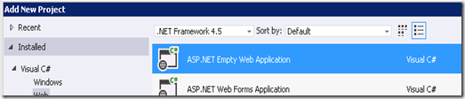
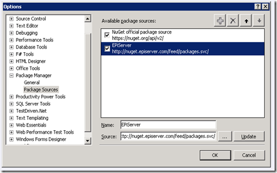

I’m assuming that you’ve read the installation instructions:
http://world.episerver.com/Documentation/Items/Installation-Instructions/EPiServer-CMS/Version-6/EPiServer-CMS-6-R2/Installation-Instructions---EPiServer-CMS-6-R2/
Creating a new blank EPiServer Site Project and Solution
- Prepare Repository
- Check out trunk/main branch to working copy
- Create an Empty VS Solution root of the working copy
- Download the 6R2 installer from EPiServer World (you’ll need to register):
- http://world.episerver.com/Download/Categories/Products/EPiServer-CMS/
- Run installer and deploy a Core deployment to the Working Copy, creating a project folder
- Open VS solution
- Add New Empty Website Project (use a temporary name)

- Configure project properties as required:
- Assembly Name (<client>.WebSite)
- Assembly Info (Version, Name, Copyright, etc)
- Namespace (<client>.WebSite)
- Target Framework (.Net 3.5)
- Treat Warnings as Errors (All Configurations)
- Strong Naming Key
- Code Analysis Rules
- Save and Remove the Temporary Website Project from the Solution
- Move project file into EPiServer Website folder and rename to match
- Edit the file in notepad to replace all instances of the Temporary Project Name with the real one
- Also copy
- web.*.config (not web.config)
- the Properties folder
- Any supporting files you added (Strong naming key, Code Analysis rules, etc)
- Add the moved Project file to the solution as an Existing Project
- Enable ‘Show All Files’ and include all
- Edit episerver.config to configure:
- Start Page Id – set startPageId attribute to ‘1’ (from ‘0’) (/sites/site/siteSettings[startPageId])
- Site Description attribute
- Site Url - the siteUrl attribute (/sites/site/siteSettings[siteUrl])
- Edit EPiServerFramework.config to ensure that the correct siteHosts are set
- Test the project builds as expected and website is working (place holder page is displayed)
- place holder page is displayed
- Commit the solution to version control, ensuring that only code and configuration files are committed not build
outputs or per user settings (/bin, /obj, *.user files etc).
Managing Dependencies for CI
The project builds successfully as all of the required dependencies exist within the bin folder of the website.
This means the the build server will not be able to successfully build the project. We can manage this in two
ways:
- (Recommended) Move all of the DLL’s from the bin folder into a ‘3rd Party’ or ‘libs’ folder and
create references to all of the top level assemblies from there, ensuring the ‘Copy Local’ is enabled.
- For each additional EPiServer installed to the website this procedure will need to be repeated
- Manage the dependencies via the EPiServer NuGet service (required NuGet VS extension) (not recommended as
the feed is outdated compared to the download from EPiServer World)
Admission: I couldn’t get this to work, so I might be a bitter!
From here it should be build scripts as usual!
Here Be Dragons –
Configuring EPiServer Dependencies using NuGet
I couldn’t get this to work as intended – in the hope that I’ve done something stupid
and easiliy correctable….
Managing dependencies via NuGet is the new standard for managing dependencies and has many advantages over manually
maintaining references. For CI builds, not storing binary files within version control is a big win.
Unfortunately, the EPiServer NuGet feed doesn’t take advantage of all NuGet offers and is already a little out of
date. However, if you want to attempt to get a core EPiServer site running using NuGet dependencies:
- Enable NuGet Package Restore on the Solution (from Project Menu, or Right Click on Solution)
- Add the EPiServer NuGet feed (http://nuget.episerver.com/feed/packages.svc/) to
the Package Manager Sources

- Install the required packages as references to the EPiServer Website project via the Package Manager Console
(Ensuring the EPiServer package source is selected)
- Install-Package EPiServer.CMS.Core -Version 6.1.379.0
- Install-Package EPiServer.Framework -Version 6.2.267.1
- The balance of the dependencies will need to be references from the 3rd Party folder.
-
At this point the project wouldn’t display as a website will a null reference
exception (no stack trace)
{kind=link}
{kind=link}